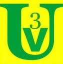

Sin conexión
No pudimos comunicarnos con el servidor del club. Revise su conexión a internet e inténtelo nuevamente.
Las solicitudes de alquiler y cualquier dato privado siempre se consultan en el servidor, por lo que no se muestran sin conexión.
ReintentarCSDUV3 · Sistema de gestión institucional